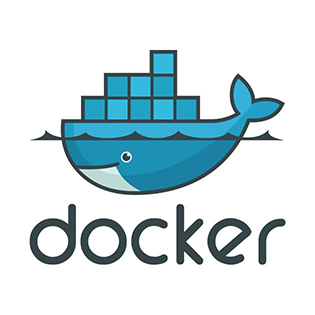

- In this course, you learned how to create a Docker server and an NGINX hosting system with Apache server. What was the impact of this course on your future career goals?
- What was difficult or surprising to you about NGINX, Apache and Docker, and why?
- Did this course inspire you to want to continue using Docker? Why or why not?
- This course provided me with an insight to managing and deploying container based images for deployment in any environment. As a developer, the ability to easily package and deliver applications and be up and running quickly for a development environment plays a major role in my career. Knowledge of web servers like Apache and NGINX are important since both are very popular open source web servers used in development.
- Surprising to me about Apache was the overall simplicity of installing and running the server. NGINX was pretty straight forward however, Docker seemed quite a bit complex at first because of so many configuration options.
- This couse did actually inspire me to continue using Docker. I'd like to work more with Docker and actually use the environments in a real world scenario for development. I think Docker is actually a very powerful useful tool and platform for building portable containers to package up for multiple types of environments.
